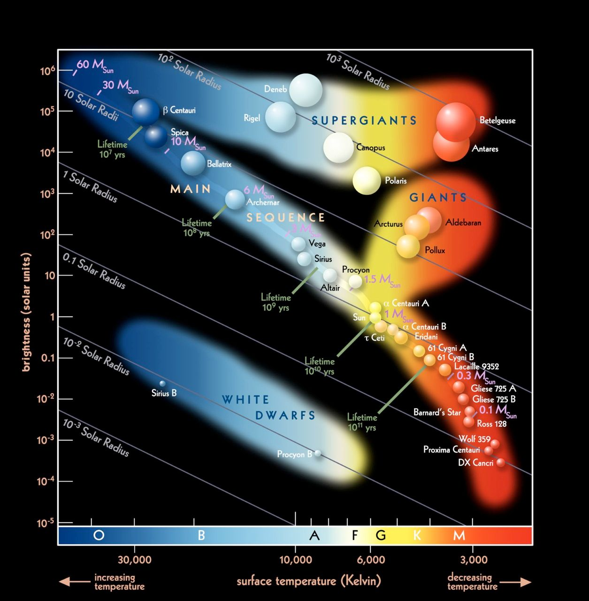
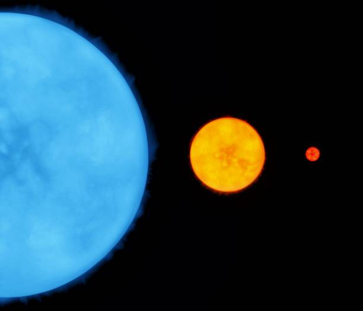
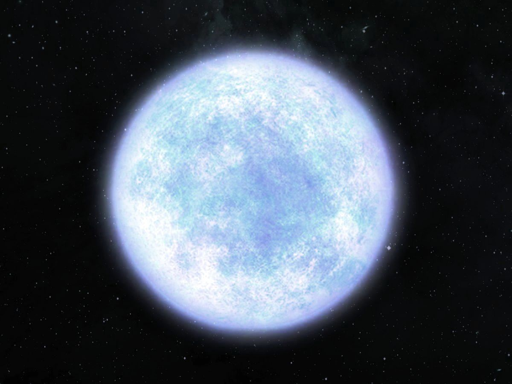
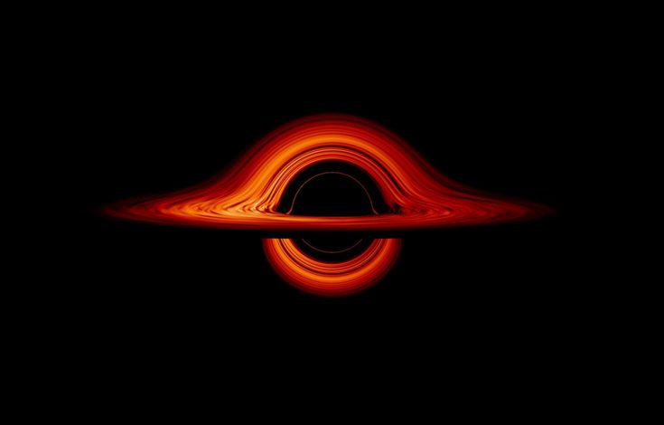

Las estrellas principales son aquellas que se encuentran en la secuencia principal de Hertzsprung-Russell. Estas estrellas están en equilibrio, fusionando hidrógeno en helio en sus núcleos. El Sol es un ejemplo de una estrella principal.

Las estrellas gigantes son aquellas que han agotado el hidrógeno en sus núcleos y han expandido su tamaño significativamente. Estas estrellas son más grandes que las estrellas principales y pueden ser rojas o azules dependiendo de su temperatura.

Las estrellas enanas son estrellas pequeñas y frías que tienen una masa menor que la de nuestro Sol. Un ejemplo es la estrella enana roja, que es la más común en el universo.

Es el resultado de una estrella que ha agotado todo su combustible nuclear y ha colapsado en un agujero negro. Este proceso es el final de la vida de una estrella muy masiva.
